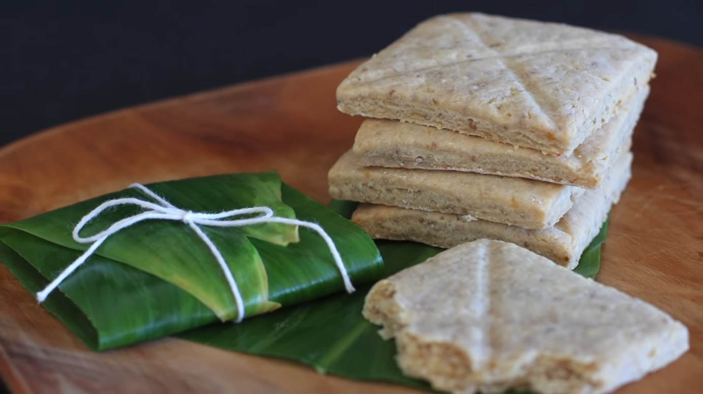

Elven Lembas - Bread

Eat little at a time, and only at need. For these things are given to serve you when all else fails. The cakes will keep sweet for many many days, if they are unbroken and left in their leaf-wrappings, as we have brought them. One will keep a traveler on his feet for a day of long labour, even if he be one of the tall men of Minas Tirith.
While this recipe won’t satiate your appetite with a single bite, it will serve as a delightful treat perfect for afternoon tea….or any of the other 6 hobbit meals throughout the day (including breakfast, second breakfast, elevenses, luncheon, dinner, and/or supper). Resembling a scone, this recipe produces bread that is light in taste and satisfying in texture. Bake these up to celebrate Hobbit Day, to serve at your next Lord of the Rings party, or to enjoy during your next marathon (book or movies).
Ingredients
- 21/2 cups of flour.
- 1 tbsp of baking powder.
- 1/4 tsp of salt.
- 8 tbsp of cold butter (1 stick)
- 1/3 cup of brown sugar.
- 1 tsp of cinnamon.
- 1 tsp of honey.
- 1 cup of heavy cream (or more, if necessary - you want your dry ingredients to be moxed in, but not to become a sticky mess)
- 1/2 tsp of vanilla.
- (Optional) add chopped up dried fruit, such as dates, and/or ground nuts to make the pieces more sustaininng and filling.
- Prefer a stronger taste? Double up on the honey and cinnmamon.
Directions
- Preheat oven to 425° Fahrenheit.
- Mix the flour, baking powder, and salt in a large bowl.
- Add the butter and mix with a fork or a pastry cutter until the mixture resembles fine granules
- Add sugar and cinnamon, and mix them thouroughly into the mixture.
- Add the cream, honey, and vanilla and stir them in with a fork unitl a nice, thick dough forms.
- Roll the dough out about 1/2" in thickness, then cut out 3-inch squares and transfer the dough to a cookie sheet. Similarly, take individual balls of dough and shape them into squares on your cooking sheet.
- Criss-Cross(do not cut halfway) each square from corner-to-corner with a knife.
- Bake for about 12-15 minutes (depending on the thickness of the bread) until the loaves are set and lightly golden.
Feeling particularly nerdy and wantin gto take your lembas to the next level? Wrap yout loaves in faux Mallorb leaves and twine. Now, all that is left is to enjoy them.